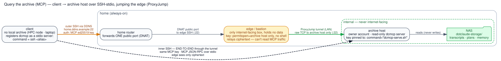

Query the archive (MCP)¶
grep-ing the logs finds a chat by a word you remember typing. The harder case — "I discussed
X somewhere a while ago, which machine was it even on?" — is what the sjmcp MCP server
solves: a read path back into a live session over everything the relay already wrote
(transcripts, plans, cross-machine memory), so you can recall a past session by topic and pull
it — or just the relevant slice — straight into context without leaving Claude.
It's a single-file, read-only server (mcp/sjmcp_server.py, run via uv run --script) that
reads the same storage pointers as the rest of scrubjay (SCRUBJAY_LOCAL_CHATS,
SCRUBJAY_MEMORY, SCRUBJAY_DATA). Recall is deliberately embedding-free — a fast ripgrep
prefilter (grep fallback) surfaces candidate snippets and the in-session model does the semantic
ranking — so there's no index to build and nothing sensitive ever leaves the NAS. Each sj_recall
enumerates the archive once and resolves every candidate's metadata from that single pass, so
cost scales with the size of the archive rather than the number of matches — it stays snappy as the
corpus grows (a NAS-mounted archive of ~100+ sessions recalls in tens of milliseconds). It also folds the
logs/<host>.log session catalogue into recall: a topic match there links to the transcript
when present, or stands alone as a "you had this on <host>" pointer — so recall spans even
sessions whose full transcript isn't on the machine you're asking from. It exposes:
| Surface | What |
|---|---|
| tools | sj_list (browse w/ filters, incl. type=log for the catalogue), sj_recall (topic → ranked candidates + anchors), sj_search_within (a topic inside one session → turn/line anchors), sj_get (fetch an artifact or a turns=/lines= slice), sj_status |
| resources | every transcript/plan/memory as an @-pickable resource (sj://transcript/…, sj://plan/…, sj://memory/…) with a human, date-sorted title |
| commands | /sjrecall <topic>, /sjfind <topic> in <session>, /sjbrowse [type], /sjget <ref> — thin wrappers that drive the tools (full list under Slash commands) |
Registration is automatic, three ways¶
All done by claude-sync.sh at user scope, picked by what this machine has:
- On a GitHub (
gitbackend) machine — thescrubjay-chatsclone is the archive: the relay writes the same<host>/{readable,plans,…}tree into it that a NAS holds, soclaude-sync.shregisters a local stdio server pointed straight at the clone.sync-session.shgit pulls the clone at the start of each session, so recall spans every machine's sessions, not just this one's. No NAS, WireGuard, or SSH — nothing to authorize. (Cross-machine memory recall rides its own repo, notscrubjay-chats— enable it with/sjmemory, which points it at a separate privatescrubjay-memoryGitHub repo for this backend; transcripts, plans, and the logs catalogue work out of the box. See memory for the custody trade-off.) - On the archive host (the always-on home server where
SCRUBJAY_LOCAL_CHATS→ the NAS is mounted): a local stdio server reads the mounted archive directly. Nothing to do beyond onboarding. - On a client with no local archive (a laptop, or an HPC login node): run
bin/onboard-mcp-client.sh(offered byonboard.sh). It pointsSCRUBJAY_MCP_REMOTEat the archive host and registers ansshentry; on connect, a forced command (bin/sjmcp-serve.sh) runs the server on the archive host and pipes MCP stdio back over the same SSH/ProxyJump path the relay uses. The server side stays a manualauthorized_keysauthorize (printed by the script), like the relay + memory keys. One mechanism covers both kinds of client: a laptop on the WireGuard mesh, and an HPC login node that can't join it — clusters typically block the outbound UDP that WireGuard needs, so those nodes fall back to plain SSH/ProxyJump instead. If neither path applies,claude-sync.shprints a loud, actionable skip rather than silently doing nothing.
The remote transport (SSH-stdio)¶
A client with no local archive registers sjmcp as a stdio server whose command is
ssh <alias>. That SSH jumps the edge/bastion (ProxyJump) to reach the archive host on the
home LAN, where a forced command launches the read-only server; MCP JSON-RPC rides the pipe. The
clever bit is the two nested SSH sessions: an outer one authenticates to the edge (whose key
is restricted to forwarding a single port — no shell), and an inner, end-to-end session runs
through that tunnel to the archive host. So the edge only ever relays opaque ciphertext — it can't
read or tamper with the MCP traffic. Auth is asymmetric (an ed25519 key, verified at both hops);
the tunnel itself is the usual symmetric SSH channel.

Diagram source: transport-mcp.dot — dot -Tsvg docs/transport-mcp.dot -o docs/transport-mcp.svg. Placeholder DDNS name + default ports; substitute your own.
The one manual step — authorize the client on the archive host¶
onboard-mcp-client.sh does everything on the client, then prints the exact line(s) to install by
hand (the server side is never automated — same rule as the relay + memory keys). Each key is
pinned to the read-only server and nothing else:
- On the archive host, add to the owner account's
~/.ssh/authorized_keys(the account withuv+ the scrubjay clone + archive read — not the write-only relay account). The forced command confines the key to the one server, so a leaked key can only run read-only archive queries:
- If the path crosses a ProxyJump edge/bastion (e.g. an HPC client), also add to the jump user's
~/.ssh/authorized_keyson the edge — letting the key tunnel only to the archive host's port, run nothing:
restrict,port-forwarding,permitopen="<archive-host>:<port>",command="/bin/false" <the printed public key>
Then verify from the client — `ssh